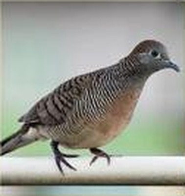
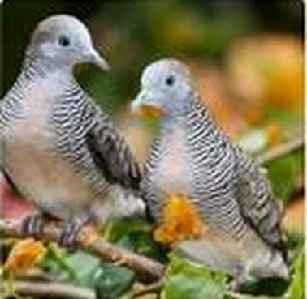

Jikalau aku mendengarkan burung Perkutut menyanyi di pohon ditiup angin yang sepoi-sepoi
bukan lagi aku mendengarkan burung Perkutut Aku mendengarkan Indonesia
Soekarno - President RI I


Burung Perkutut Jawa dengan nama latin Geopelia striata bukan hanya burung yang mampu bersuara, akan tetapi burung ini mempunyai beragam keunikan yang tidak dimiliki oleh burung lainnya. Bagi sebagian pemelihara burung, dengan hanya melihat perkutut, sudah bisa memastikan bagaimana suara yang akan dihasilkan. Salah satu kebiasaan dari burung ini adalah terbang dan bertengger di kebun atau ladang. Selain itu, mereka juga sering mencari makan di jalan yang jarang dilintasi oleh manusia
Perkutut Jawa hidup berpasangan atau kelompok kecil. Perkutut jawa makan di permukaan tanah. Kadang mereka berkumpul untuk minum di sumber air. Sarangnya berbentuk datar tipis dan terbuat dari ranting-ranting. Telur berwarna putih, jumlah 2 butir. Perkutut Jawa berbiak pada bulan Januari-September.
Perkutut Jawa berukuran kecil dengan bulu keabu-abuan dan corak garis hitam tipis pada bagian dada dan leher. Burung ini banyak ditemukan di Asia Tenggara, termasuk Indonesia, dan sejak lama dipelihara karena suaranya yang merdu dan menenangkan.
Perkutut dapat dibudidayakan dalam kandang yang bersih, kering, dan cukup terkena sinar matahari pagi. Pakan yang diberikan berupa biji-bijian seperti jawawut dan millet, ditambah air minum bersih setiap hari. Pasangan yang cocok sebaiknya dipisahkan dari pejantan lain agar tidak berkelahi.
Harga burung Perkutut Jawa bervariasi tergantung usia, kualitas suara, dan keturunannya. Sebaiknya bandingkan beberapa penjual dan dengarkan langsung suaranya sebelum membeli.